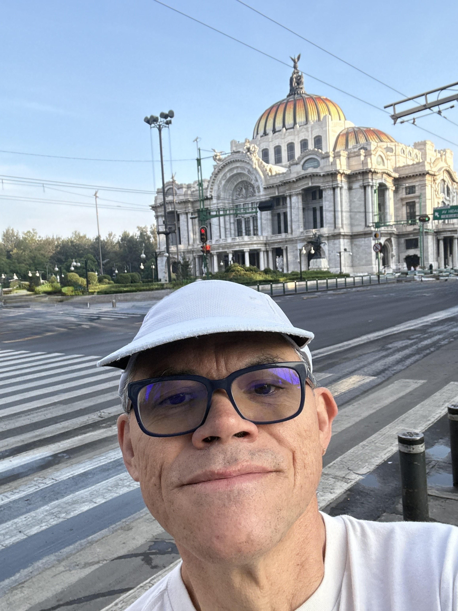
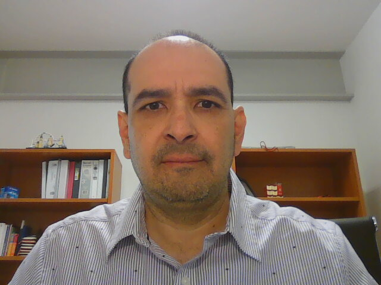

Technical Steering
Committee.
The TSC oversees design and development activities, sets release quality standards, mediates technical conflicts, and organizes inter-project collaboration across the OpenDaylight ecosystem.
The TSC is responsible for simultaneous release dates, release quality standards, technical best practices, monitoring technical progress, and serving as OpenDaylight's liaison with other consortiums and groups.
TSC meetings are held weekly on Thursdays at 09:00 Pacific / 16:00 UTC. All meetings are open to the community and minutes are published on the wiki.
Join via Zoom: Register/Join Here
Elections for Committer-At-Large seats are held annually. All OpenDaylight committers and Active Community Members can nominate themselves, run for election, and vote.
/ Current TSC Members







/ LF Staff